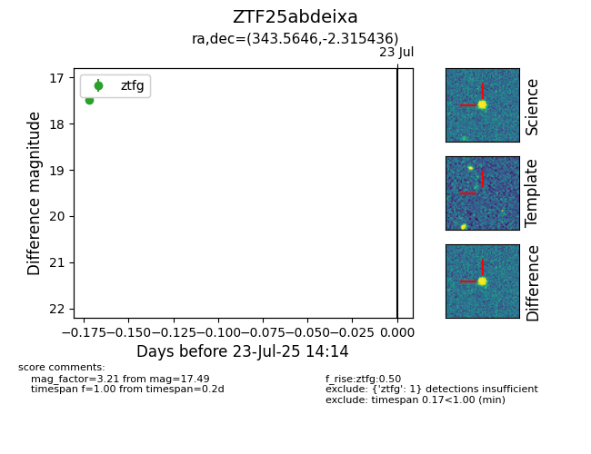

Target ZTF25abdeixa at 2025-07-23 14:14, see:
FINK: fink-portal.org/ZTF25abdeixa
Lasair: lasair-ztf.lsst.ac.uk/objects/ZTF25abdeixa
ALeRCE: alerce.online/object/ZTF25abdeixa
alt names
ZTF25abdeixa (ztf,fink)
coordinates:
equatorial (ra, dec) = (343.5646,-2.31544)
galactic (l, b) = (69.4029,-52.55698)
photometry
last ztfg=17.49
1 ztfg detections
